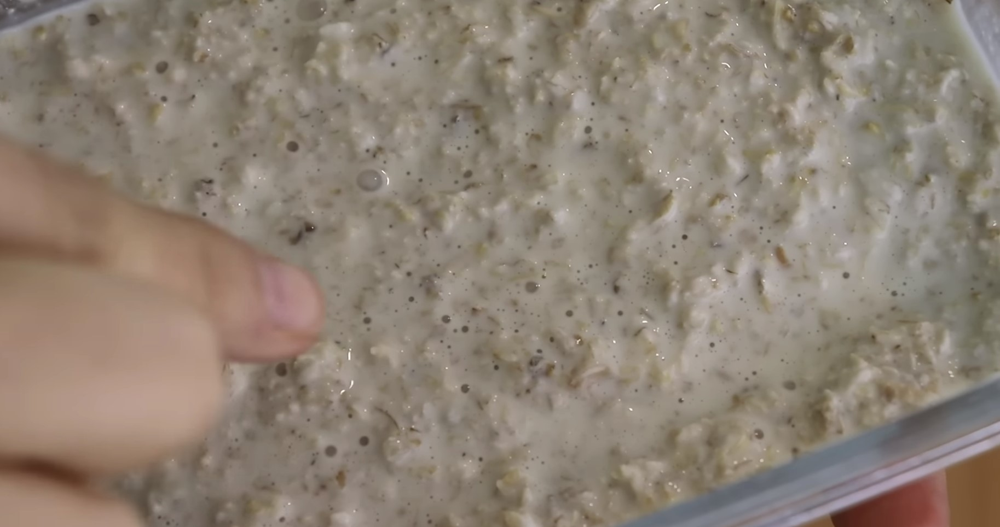
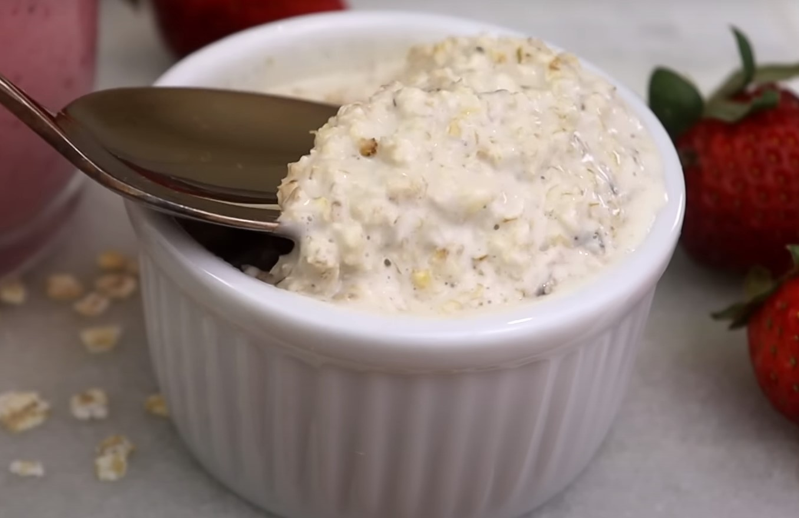

Aveia Fermentada
1 xícara de aveia em flocos
1 xícara de água
1 Cápsula probiótica ou 1/4 e xícara do iogurte anterior
Iogurte com frutas vermelhas
1 banana prata
1/4 xícara da aveia fermentada
1/4 xícara de leite vegetal
Frutas vermelhas
Aveia Fermentada
Misture a aveia e a água
Coloque a capsula probiótica ou iogurte anterior
Tampe o vidro mas, mas não aperte a tampa (a fermentação libera gases)
Cubra com pano para manter aquecido e livre da luz solar
Deixe de 1 a 3 dias (quanto mais quente, menos tempo)
Como saber se está fermentado?
- Cheiro de iogurte (ou talvez queijo)
- Parecerá mingau de aveia
- Aparecerão bolhas


Duração: 4 dias
Como utilizar
Misture a banana, aveia fermentada, leite vegetal e frutas vermelhas
Bata tudo no liquidificador
- Esterilize o material que será utilizado
- Não utilize metal ou plástico